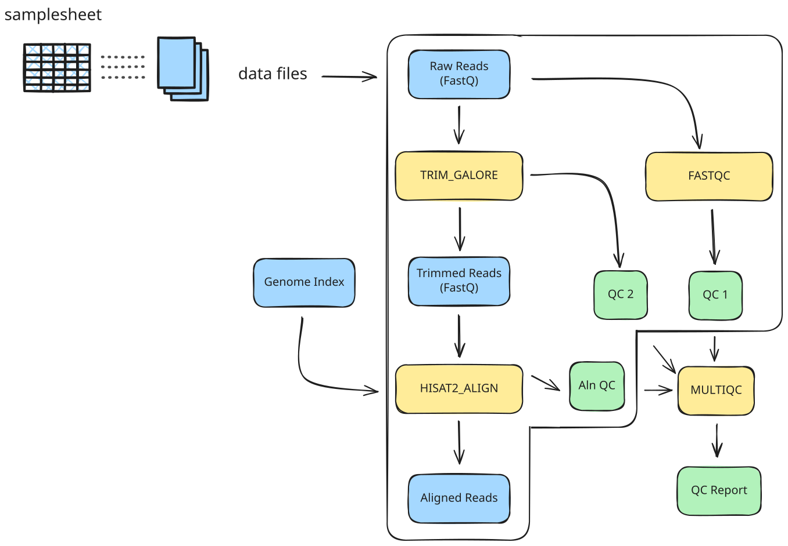

Controlling execution
RNA-seq pipeline: executors, operators, software management and profiles
Learning outcomes
After having completed this chapter you will be able to:
- Explain how executors control where the RNA-seq workflow runs (local vs. cluster).
- Use common channel operators (e.g.
splitCsv,map,mix,collect) to orchestrate complex logic. - Configure software management using containers and Conda through
nextflow.configand process directives. - Define and select profiles to adapt the same pipeline to different environments (laptop, HPC, test runs).
Material
Overview of the RNA-seq pipeline
Let’s go to the directory then:
cd /workspaces/nextflow-training/exercises/rnaseq-pipeline
code .
These are the files in the directory
rnaseq-pipeline
├── data
│ ├── genome_index.tar.gz
│ ├── paired-end.csv
│ └── reads
│ ├── ENCSR000COQ1_1.fastq.gz
│ ├── ENCSR000COQ1_2.fastq.gz
│ ├── ENCSR000COQ2_1.fastq.gz
│ ├── ENCSR000COQ2_2.fastq.gz
│ ├── ENCSR000COR1_1.fastq.gz
│ ├── ENCSR000COR1_2.fastq.gz
│ ├── ENCSR000COR2_1.fastq.gz
│ ├── ENCSR000COR2_2.fastq.gz
│ ├── ENCSR000CPO1_1.fastq.gz
│ ├── ENCSR000CPO1_2.fastq.gz
│ ├── ENCSR000CPO2_1.fastq.gz
│ └── ENCSR000CPO2_2.fastq.gz
├── modules
│ ├── fastqc_pe.nf
│ ├── hisat2_align_pe.nf
│ ├── multiqc.nf
│ └── trim_galore_pe.nf
├── nextflow.config
└── rnaseq.nf
The RNA-seq pipeline in exercises/rnaseq-pipeline/ is a more realistic example that:
- Uses multiple processes for quality control, trimming, alignment and reporting.
- Leverages executors and profiles to run on a laptop or on an HPC cluster.
- Chains data with several channel operators.
- Runs tools via containers or Conda, depending on the selected profile.
The main components are:
rnaseq.nf: workflow definition (entry point).modules/*.nf: modular processes (FASTQC,TRIM_GALORE,HISAT2_ALIGN,MULTIQC).nextflow.config: global configuration (executors, profiles, parameters, software engines).
The workflow at a glance
In rnaseq-pipeline.nf, the workflow:

- FASTQC: Perform QC on the read data before trimming using FastQC.
- TRIM_GALORE: Trim adapter sequences and perform QC after trimming using Trim Galore (bundles Cutadapt and FastQC).
- HISAT2_ALIGN: Align reads to the reference genome using Hisat2.
- MULTIQC: Generate a comprehensive QC report using MultiQC.
rnaseq.nf
| rnaseq.nf | |
|---|---|
1 2 3 4 5 6 7 8 9 10 11 12 13 14 15 16 17 18 19 20 21 22 23 24 25 26 27 28 29 30 31 32 33 34 35 36 37 38 39 40 41 42 43 44 45 46 47 48 49 50 51 52 53 54 55 56 57 58 59 60 61 62 63 64 65 66 67 68 69 70 71 72 73 74 75 76 77 78 79 80 81 82 | |
nextflow.config
| nextflow.config | |
|---|---|
1 2 3 4 5 6 7 8 9 10 11 12 13 14 15 16 17 18 19 20 21 22 23 24 25 26 27 28 29 30 31 32 33 | |
Executors: where tasks are run
In this pipeline, the executor is controlled entirely by nextflow.config profiles:
my_laptopprofile:
| nextflow.config | |
|---|---|
15 16 17 18 | |
univ_hpcprofile:
| nextflow.config | |
|---|---|
19 20 21 22 23 24 25 26 27 | |
Resources in a shared HPC cluster
Use the directive process.resourceLimits to control the resources allocated per job (memory, CPUs, walltime). Make sure that you are using the specified limits in your cluster, if you don’t know them, ask your cluster administrator.
Without specifying a profile, the default executor is used (often local, depending on your Nextflow installation). By selecting a profile, you tell Nextflow:
- Where to submit each process task (local machine vs. scheduler such as SLURM).
- How to manage resources (process-level vs. cluster-level limits).
You can choose an executor profile at run time:
nextflow run rnaseq.nf -profile my_laptop
nextflow run rnaseq.nf -profile univ_hpc
Don’t use the univ_hpc profile
This profile is not actually functional since GitHub Codespaces does not feature SLURM.
What does the executor actually do?
The executor decides:
- How tasks are queued and started (local processes vs. submitted jobs).
- How resource requests (CPUs, memory, time) are translated into scheduler options.
- How logs and exit codes are collected.
- More executors
Profiles can do much more
Setting profiles is much more useful than just setting the executors. Below, you will see other profiles you can create.
Operators: shaping the dataflow
The workflow in rnaseq.nf uses several channel operators to prepare inputs and orchestrate multiple outputs:
Building the read channel
The input section of the workflow:
| rnaseq.nf | |
|---|---|
27 28 29 | |
- Reads
params.input(a CSV file). - Uses
splitCsv(header: true)to read a CSV file and emits one row at a time as a map-like object - Uses
mapto turn each row into into a pair of FASTQ file paths.- The result is a channel of
[read1, read2]pairs.
- The result is a channel of
The resulting read_ch is then passed to:
FASTQC(read_ch)for initial QC.TRIM_GALORE(read_ch)for trimming and post-trimming QC.
Exercise: Go back to the previous hello pipeline and try to understand how the CSV file was handled then.
hello-pipeline.nf
| hello-pipeline.nf | |
|---|---|
13 14 15 | |
Reading a CSV file
In this case, the only difference is what the map operator is taking from the row or line. Since in that pipeline the only important value from the CSV file is the greeting, line[0] is the only one taken wich corresponds to Hello, Bonjour and Holà.
Exercise: Use the operator view() to print on the terminal the actual input and how it goes into the read_ch.
Exercise: add another operator
- Add a
.view()operator onread_chto print which read pairs are being processed.
| rnaseq.nf | |
|---|---|
27 28 29 30 | |
- Run the pipeline and confirm that the printed pairs match your expectations.
nextflow run rnaseq.nf -profile test
- Remove
.view()afterwards to keep the log clean.
Combining QC outputs for MultiQC
To generate a single MultiQC report, the workflow needs inputs from several processes:
| rnaseq.nf | |
|---|---|
41 42 43 44 45 46 47 48 49 | |
mix(...): combines multiple channels into one, keeping all emitted values.collect(): gathers all emitted items into a list before passing them to the next process.
This pattern:
- Keeps sample metadata in a structured form.
- Ensures each process receives the right set of files per sample.
Instead of wiring each channel separately, the pipeline:
- Creates an empty channel with
channel.empty(). - Uses
.mix(...)to merge all QC-related channels into onemultiqc_files_ch. - Uses
.collect()to turn all QC files into a single list. - Passes that list into
MULTIQC(multiqc_files_list, params.report_id).
This shows how operators:
- Let you compose complex behaviours (many inputs → one report).
- Keep the workflow block declarative and readable.
Exercise: Do you actually understand the difference between mix() and collect()?
Not the same
The operator mix() takes the output from all the specified channels, but it doesn’t mean they are part of the same list; they are emitted individually. collect() gathers all of these channel values to consolidate a single list.
collect() does more than collecting
collect() can be used as a flux control operator. This means that even though you don’t need to collect all the files in a specific process to execute, you can use it to force the pipeline to wait until all the previous processes are finished. This is useful, for example, when the pipeline includes downloading databases as you might want to wait until all the downloads are finished. Why? Let’s suppose that you are downloading three databases, each of them triggering different processes, but they have different sizes. So, when any database is downloaded, the subsequent process starts, but what if this subsequent process fails? The download of the other databases would be interrupted, and you may don’t know it. It might appear that the other databases were downloaded successfully. Therefore, you can use collect() to wait until all three downloads are finished to continue with the pipeline.
Software management: containers and Conda
Software is managed at two levels:
- Global engine selection in
nextflow.config. - Process-level declarations in each module (
containerdirective).
Global settings in nextflow.config
At the top of nextflow.config:
| nextflow.config | |
|---|---|
1 2 | |
This means:
- By default, containers are used if a process declares a
containerimage. - Conda is disabled unless turned on by a profile.
In the univ_hpc profile:
conda.enabled = true- You can extend this configuration to provide Conda environment definitions if containers are not available (see below).
Process-level container images
Each RNA-seq module specifies its container, for instance:
| modules/fastqc_pe | |
|---|---|
5 | |
or
| modules/hisat2_align_pe | |
|---|---|
5 | |
With docker.enabled = true in nextflow.config (e.g. my_laptop):
- Nextflow pulls and runs these images with Docker (or another container engine depending on config).
With conda.enabled = true (e.g. univ_hpc):
- You can add
condadirectives to the processes. For instance, to execute the process FASTQC(), you can add the proper conda environment:
| modules/fastqc_pe | |
|---|---|
6 | |
You need the channel bioconda in this case, and the version fastqc=0.12.1.
- Nextflow will then create/use Conda environments instead of containers.
Many more options
Nextflow has evolved to incorporate many other container engines such as Singularity (Apptainer), Charliecloud, Podman, among others, as well as package managers like Mamba (Conda but faster) and Spack. More about software management.
Seqera containers
Seqera provides a free service to build containers directly from Conda or PyPI packages when these containers are not available. You only need the name of the packages you want in your container (you can use several) and the resulting technology, Docker or Singularity (also the architecture: amd64 or arm64). Actually, these are the containers we are running with this pipeline, even though they are being pulled by Docker. Please feel free to use it: Seqera containers
Do not blend technologies
Although it is possible, for example, to use Conda in some processes and Docker in others, it is highly encouraged to mantain always the same technology for all processes to avoid conflicts and ease debugging.
Profiles: adapting to different environments
Let’s bring back the profiles found in nextflow.config
| nextflow.config | |
|---|---|
13 14 15 16 17 18 19 20 21 22 23 24 25 26 27 28 29 30 31 32 | |
Aside from combining executor and software engine settings, profiles can contain parameters to define full executions. Here, the profile test:
- Sets
params.inputto the CSV filedata/paired-end.csv. - Sets
params.hisat2_index_ziptodata/genome_index.tar.gz. - Sets
params.report_id = "all_paired-end".
This lets you:
- Run a full dataset or a small test subset without modifying
rnaseq.nf. - Switch between local execution and cluster execution with a simple flag.
Combining parameters
Profiles can be comma-separated:
- One profile may define parameters (e.g.
test). - Another may define executor and engine (e.g.
my_laptoporuniv_hpc). - Nextflow merges them from left to right.
You can run the pipeline like this:
nextflow run rnaseq.nf -profile test,my_laptop
Exercise: Create a new one, e.g. codespaces, and change its executor to disable Docker and include the parameters required to run the pipeline. Execute the pipeline with such profile.
Exercise: create your own profile
Adding the profile in nextflow.config:
| nextflow.config | |
|---|---|
33 34 35 36 37 | |
Executing with:
nextflow run rnaseq.nf -profile codespaces
Not working
Disabling Docker will cause that Nextflow searches for the tools locally, and they are not installed nor available!
Putting it all together
In summary, the RNA-seq pipeline demonstrates how to:
- Use executors to target different backends (local vs. SLURM) without changing workflow code.
- Combine operators (
splitCsv,map,mix,collect) to route many intermediate files into a single reporting step. - Manage software with containers (and optionally Conda) via process directives, controlled globally by
nextflow.config. - Define profiles to select inputs, executors and software engines at run time, making the same pipeline portable across laptops and HPC clusters.